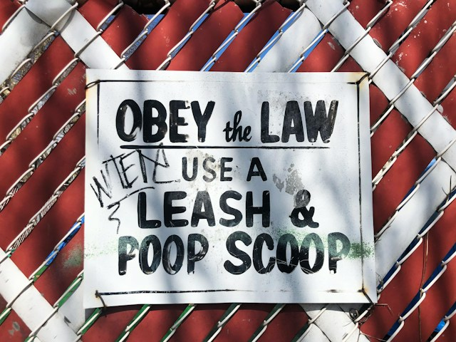

TEACHING
I have extensive teaching experience at both the undergraduate and graduate levels, in person and online. Syllabi of courses I have taught can be found below:

Law and Society (Criminology, University of Ottawa)

Research Methods in Public Administration (Public Administration, University of Ottawa)

Penology (Law, Université de Sherbrooke)

Criminal Law and Technology (Criminology, University of Ottawa)
Sentencing (Criminology, University of Ottawa)
Crime Prevention (Criminology, University of Ottawa)
My approach to teaching (or rather my uncertainties in times of what some have called “the death of higher education”) is described in a piece that I published in the Canada Legal Education Annual Review (in French). Before GenAI and as a teaching assistant, I prepared this document (in French) to help students write their papers.